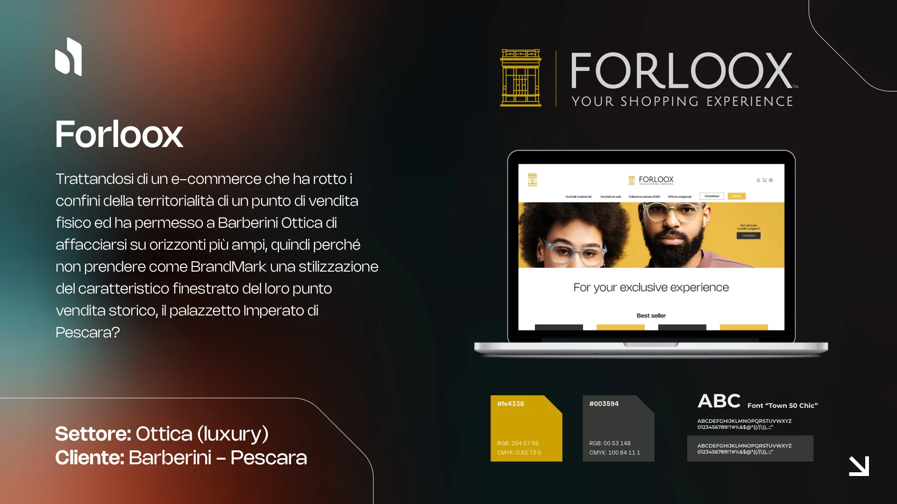

Trattandosi di un e-commerce che ha rotto i confini della territorialità di un punto vendita fisico, abbiamo permesso a Barberini Ottica di affacciarsi su orizzonti più ampi.
Il BrandMark nasce dalla stilizzazione del caratteristico finestrato del loro punto vendita storico, il palazzetto Imperato di Pescara. Un segno architettonico che diventa simbolo, unendo radici locali e vocazione globale.
Vuoi un'identità così per il tuo brand?
Parlaci del tuo progetto →